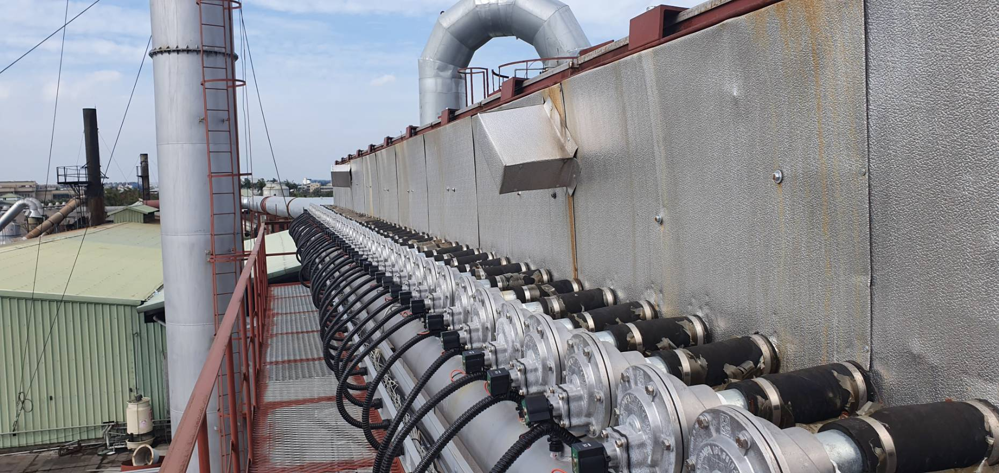
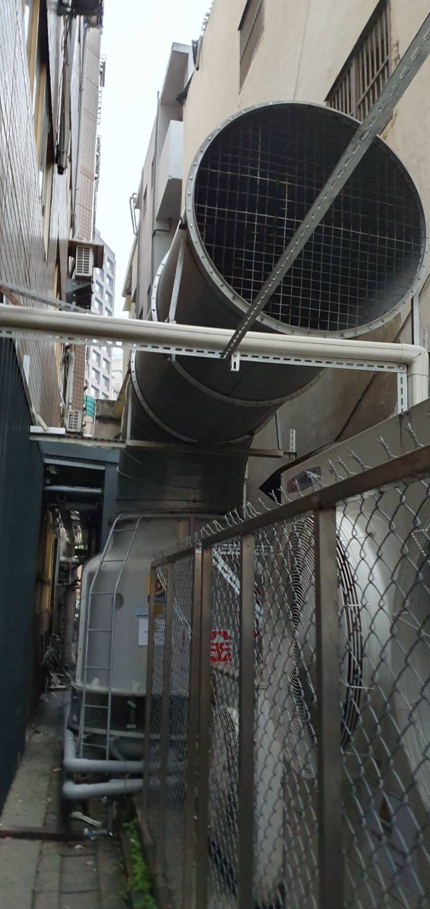

現場丈量
先確認設備尺寸、維修空間、熱源、進排風位置與聲音主要傳遞方向。
空壓機的問題常常同時包含機體噪音、進排風聲、低頻振動、管路傳振與結構共振。隔音罩如果只顧著「包起來」，沒有把散熱和風量算進去，聲音可能還沒解決，設備先熱到受不了。

現場常見的狀況是：機房裡聽起來很吵，但真正讓辦公室、鄰廠或住戶受不了的，可能是風口、管路或樓板傳過去的低頻。先把來源分清楚，後面的隔音、消音與減震才不會花錢做錯地方。
壓縮機、馬達、冷卻風扇與機殼振動會形成寬頻噪音，適合從隔音罩、吸音內襯與密封細節著手。
隔音罩一定要呼吸。只要開口沒有做聲學處理，聲音就會沿著進排風路徑直接跑出去。
設備腳座、基礎與建築結構可能把振動帶到遠端，出現「機房附近還好，別的房間反而嗡嗡叫」的情況。
高壓空氣管、固定架、穿牆點與剛性接頭，都可能成為振動傳遞路徑，不能只處理主機本體。
先確認設備尺寸、維修空間、熱源、進排風位置與聲音主要傳遞方向。
依設備重量與運轉特性檢查隔振系統，降低振動經樓板或鋼構傳遞。

檢查吊架、固定點、軟接與穿牆處，避免管路變成另一條「振動高速公路」。

真正有效的改善不是只看空壓機，而是把設備、風口、管路與結構一起看。
工程設計除了聲學效果，也要顧及壓損、散熱、維修與設備可靠度。不是把板材越做越厚就一定比較好。
區分機體聲、風口聲、振動與管路傳振。
依噪音頻率、面板結構與門縫規劃隔音。
保留所需風量，進排風同步配置消音路徑。
處理底座、軟接、支撐與結構傳振。
依設備運轉與受影響位置確認改善效果。
如果你正在評估空壓機隔音罩，建議連散熱、進排風消音與低頻傳振一起看。網站內也有相關技術文章與工程內容，可從不同問題繼續往下判斷。
不一定。隔音罩可以處理機體聲，但風口、門縫、管線穿孔與底座振動如果沒有一起處理，聲音還是會從弱點跑出去。
通常不建議。空壓機運轉會產生熱量，需要足夠的冷卻與換氣。實務上會利用進排風消音或聲學風道，在維持風量的同時降低噪音外洩。
低頻較容易透過樓板、鋼構與管路傳遞，也較不容易被一般薄型吸音材料處理。需要同步檢查基座、固定點、管路與建築結構。
不一定。材料剛性、厚度、設備重量與激振頻率都會影響效果。如果橡膠已經壓實，或選型不合，對低頻隔振的幫助可能有限。
至少要先做現場判斷。若問題涉及鄰界標準、低頻、結構傳振或改善前後驗證，量測會更有價值，也能避免只憑耳朵猜來源。
中央污染防治設備有限公司｜工業噪音振動工程｜全台服務